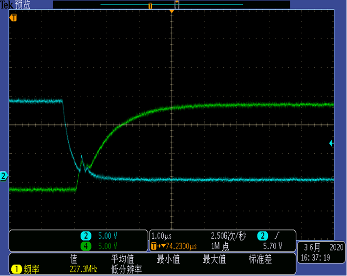

PMDY211 MOS Vgs and Vds 波形的测试
测试者 : 吴国涛
日期 : 2020-06-04
样机编号 0515-5
Mosfet = NCE7560K
Gate Driver = ID5S609
R55/R57 = 100R
R54/R58 = 33R
R51=2.2R
C32 = 1uF/35V
48V/1.93A at 3000 rpm
U
相
Vgs / CH2 上臂
/ CH4 下臂 / 测试点 : MOS G/S
Vds / CH2
上臂 / CH4 下臂 / 测试点
: MOS D/S
V
相
Vgs / CH1 电流 / CH2 上臂 / CH4 下臂 / 测试点 : MOS G/S
Vds / CH2
上臂 / CH4 下臂 / 测试点
: MOS D/S
W
相
Vgs / CH2 上臂
/ CH4 下臂 / 测试点 : MOS G/S

Vds / CH2 上臂
/ CH4 下臂 / 测试点 : MOS D/S
样机编号 0515-2
Mosfet = NCE7560K
Gate Driver = PN7106B
R55/R57 = 100R
R54/R58 = 33R
R51=2.2R/0603
C32 = 1uF/35V
U
相
Vgs / CH1 电流 / CH2 上臂 / CH4 下臂 / 测试点 : MOS G/S
样机编号 0515-4
Mosfet = NCE7560K
Gate Driver = PN7106B
R55/R57 = 100R
R54/R58 = 33R
R51=2.2R/0603
C32 = 1uF/35V
48V/1.96A at 2990 rpm